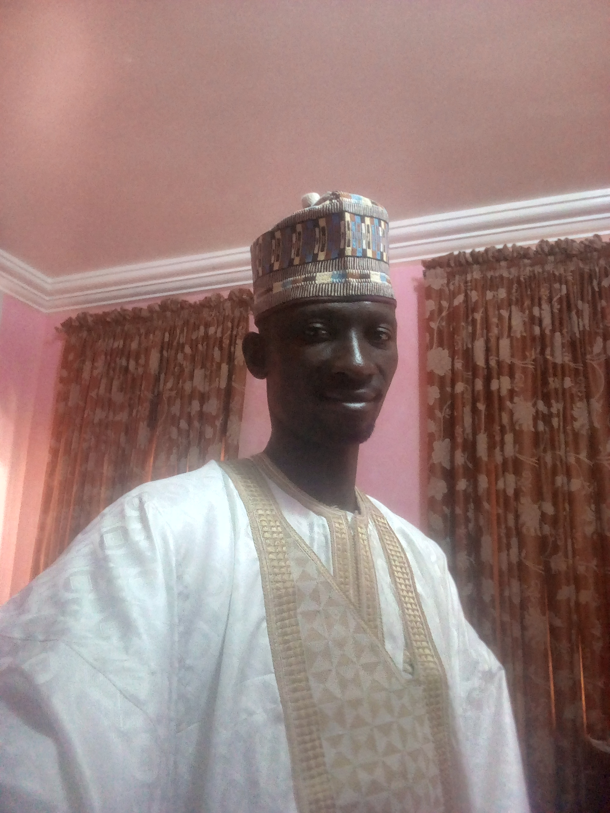

Shaykh Muhammad Shaba Bukari
The School Head
The School Head
The school Head, Mallam Muhammad Shaba Bukari, is an indigene of Bukari in Lavun Local Government Area of Niger State. He received his early education at Central Primary School, Dukku in 1980, had his secondary education at Government Science College, Kagara (1985), after which he enrolled into the School of Basic Studies of the prestigious Ahmadu Bello University, Zaria for Interim Joint Matriculation Board Examination (IJMB)...